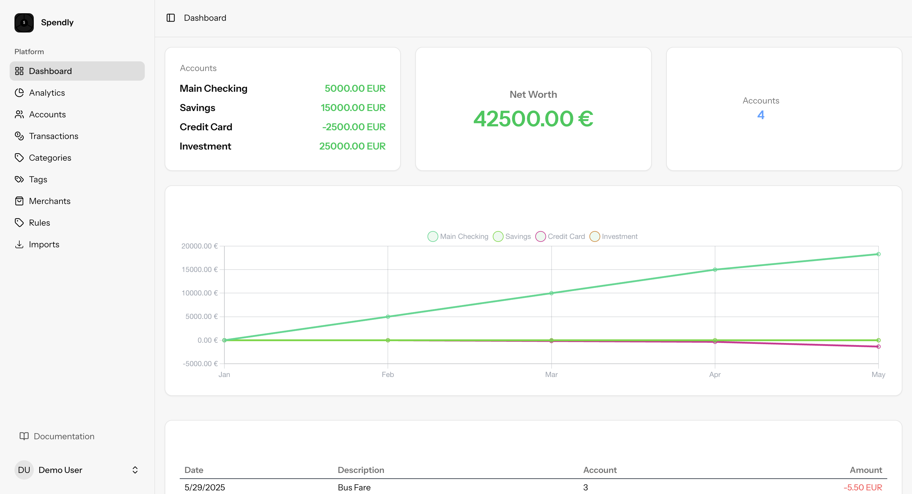

Personal finance tracker with bank sync, smart rules, and zero subscription fees. Self-host in minutes.

Your financial data stays on your server. No third-party access, no data selling, no surveillance.
No monthly fees. YNAB charges $109/yr, Monarch $99/yr. Spendly is free forever.
Open source (GPL-3.0). Export anytime. Can't be acquired or shut down.
Connect European bank accounts via GoCardless. Auto-import transactions daily.
Auto-categorize, tag, and organize transactions with custom conditions and actions.
Monthly comparisons, category breakdowns, balance history, savings rate tracking.
Import from any bank. Auto-detect formats, smart field mapping, duplicate detection.
Set monthly or yearly budgets per category. Visual progress and overage alerts.
Automatically detect recurring payments. See projected yearly costs at a glance.
All you need is a server with Docker.
Clone and start with a single command.
Interactive script that configures everything.
| Feature | Spendly | YNAB | Monarch | Firefly III |
|---|---|---|---|---|
| Price | Free | $109/yr | $99/yr | Free |
| Self-hosted | Yes | No | No | Yes |
| Bank sync | GoCardless (EU) | Plaid (US) | Plaid (US) | Spectre/Plaid |
| Rule engine | Yes | No | Limited | Yes |
| Open source | GPL-3.0 | No | No | AGPL-3.0 |
| Modern UI | React 19 | Custom | Custom | Blade/jQuery |
Open source and community-driven. Contributions, feedback, and ideas are welcome.
Spendly is in active development and has not reached v1.0 yet. It is functional and used daily, but expect breaking changes between updates. Back up your data regularly.
Spendly supports 2,500+ European banks via GoCardless (formerly Nordigen). For banks outside Europe, import transactions via CSV from any bank.
SQLite by default — zero configuration, no separate database server. MySQL and PostgreSQL are also supported.
Your data is stored entirely on your own server. Nothing is sent to third parties except bank sync via GoCardless, which requires it.
Yes. The CSV import wizard supports any bank export format with automatic field mapping. Save mappings for repeated imports.
docker compose pull && docker compose up -d. Migrations run automatically on startup.